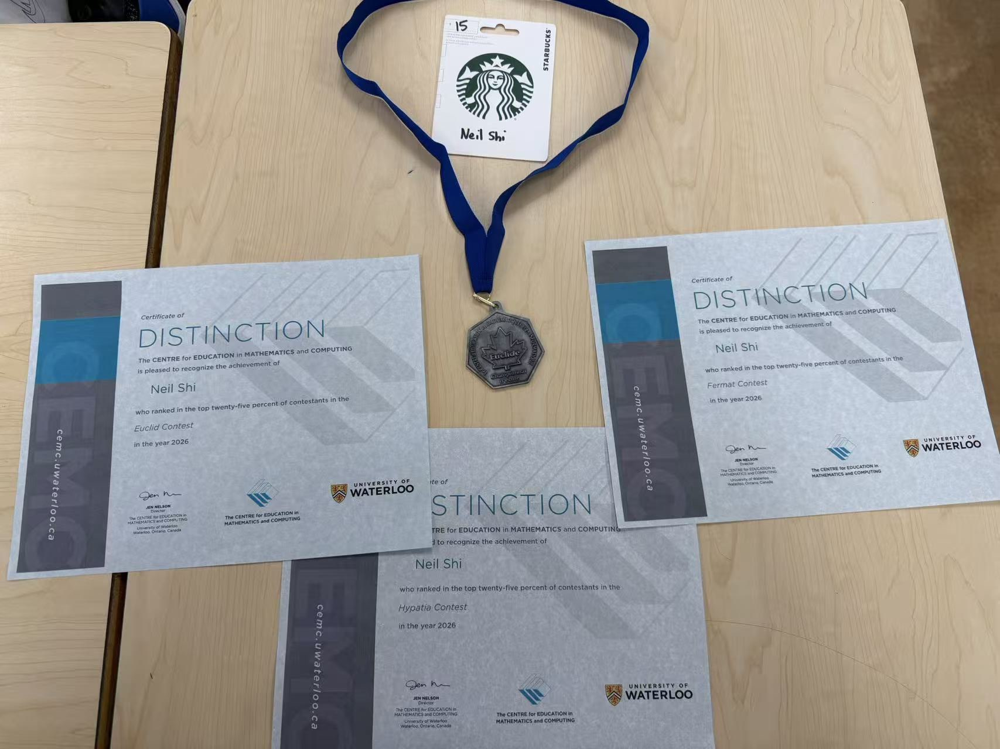
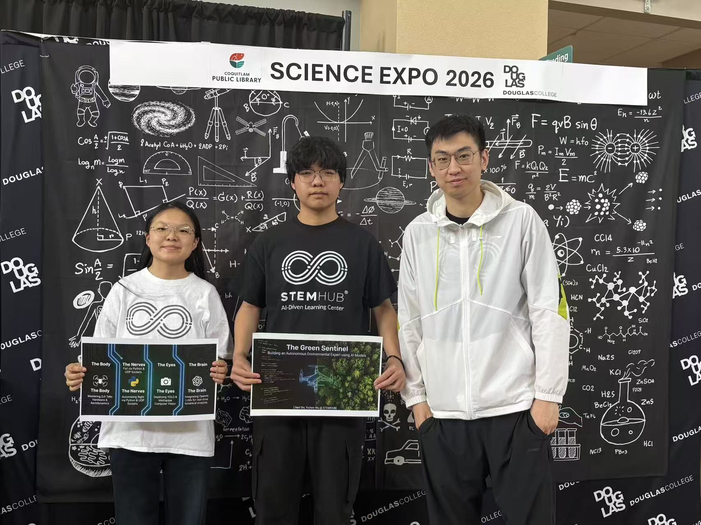
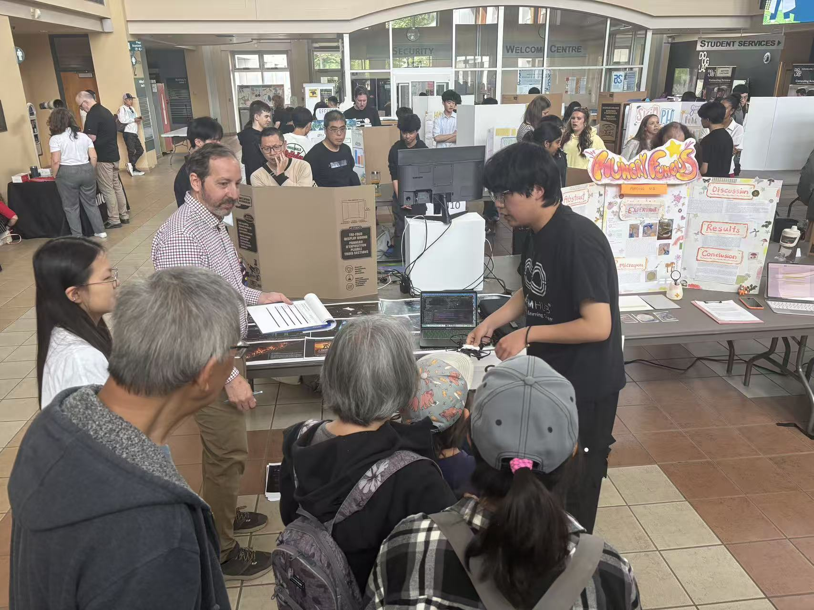

Gesture-Controlled Drone
I am developing a drone project that uses hand gestures to control flight. The project lets me explore the connection between human-computer interaction, sensing, programming, and engineering design.
STUDENT PROFILE
A Grade 12 student, problem solver, and aspiring engineer.
I am a Grade 12 student at Heritage Woods Secondary School. I enjoy turning ideas into practical systems and learning through mathematical thinking, experimentation, and teamwork. I am applying to engineering programs at the University of British Columbia, the University of Toronto, and the University of Waterloo.
I am developing a drone project that uses hand gestures to control flight. The project lets me explore the connection between human-computer interaction, sensing, programming, and engineering design.
I have participated in the Euclid, Fermat, and Hypatia mathematics competitions. Earning Distinction certificates in all three contests—placing in the top 25% of contestants—has strengthened my persistence and enjoyment of unfamiliar problems.
I earned my school's Euclid medal, an achievement that reflects my commitment to rigorous thinking and continuous learning.

MATHEMATICS
In 2026, I earned Distinction certificates in the Euclid, Fermat, and Hypatia contests, each recognizing a top-25% result. These contests have taught me to approach complex questions with structure, patience, and curiosity.


At university, I hope to build a strong foundation in engineering, collaborate with people who see problems differently, and create technologies that are useful in the real world.